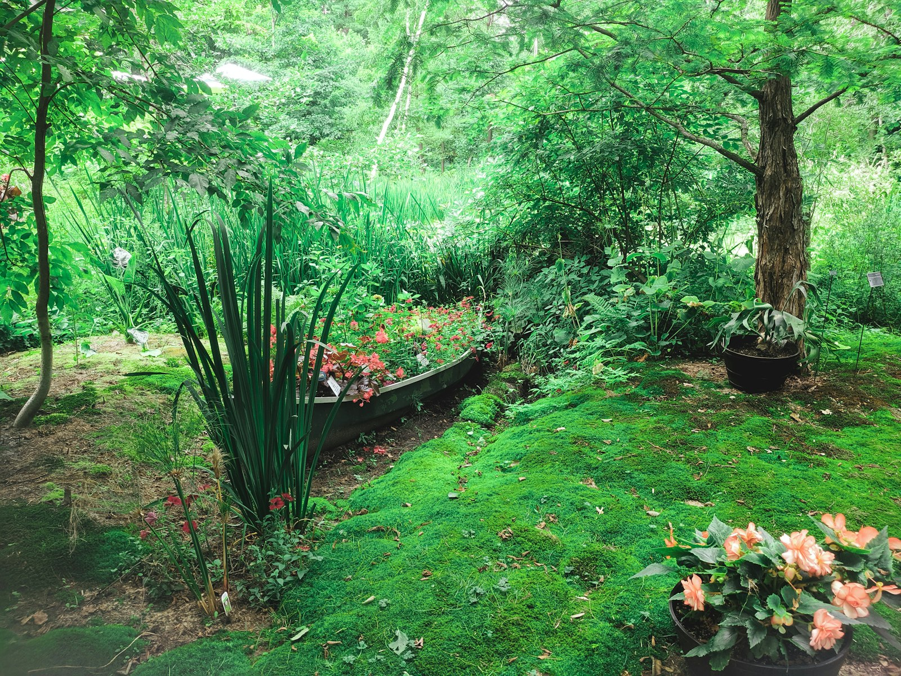

Landscape design & construction — Sydney
Gardens, built
like architecture.
We design, construct and care for outdoor spaces across Sydney — one team from the first sketch to the final planting.

Everything outdoors,
under one roof.
Five disciplines, one accountable team. No hand-offs between designer, builder and maintenance crew.

Why Harbourline
Drawn by designers.
Built by our own hands.
Most landscapers either design or build. We do both, so the garden you approve on paper is the garden that gets planted.
- ✓One contract. Design, construction and care under a single agreement.
- ✓Fixed pricing. The quote we sign is the price you pay.
- ✓Planted for Sydney. Species chosen for your aspect, soil and water rules.
From first visit
to first spring.
Walk & measure
We visit, listen, and survey the block — light, soil, drainage, and how you actually live outdoors.
Design & quote
Concept plans with a fixed, itemised quote. You approve every plant and paver before we start.
Build & care
Our crews construct, plant and finish — then scheduled care keeps it maturing as designed.
Recent gardens.
A few finished spaces. The full set lives on the Work page.

Start here
Tell us about your block.
We'll do the rest.
Send a few photos and your suburb. We'll come out, walk the site, and give you a fixed quote — no obligation.
Get a quote